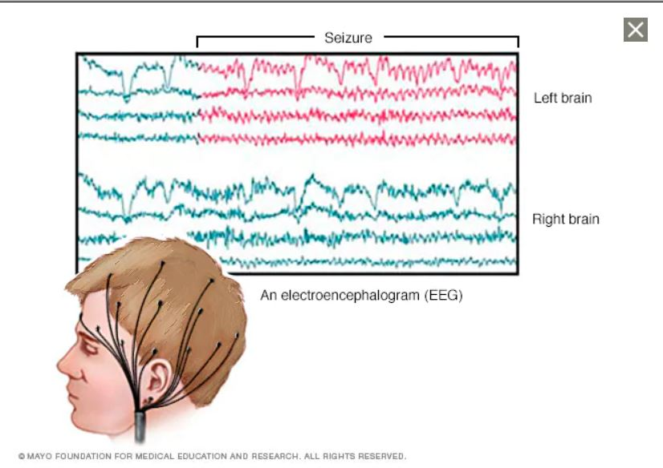
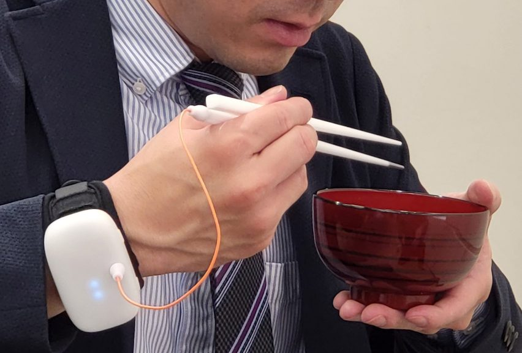

The fashionable headband that unveal emotions in a visual way
In my opinion, stimulating social interaction doesn't always mean that to make people actively engage or talk with each other. Instead, sometimes there are moments that we actually feel sad and tired, but due to some other responsibilities or tasks that we need to fulfill, we still need to push ourselves to go outside and have to encounter some unnecessary social situation that we want to avoid. There is also a possibility that people might take your tired face personally or as a negative respond but sometimes it is really hard to verbally tell others that we are not in the right mood Therefore, i came up with an idea of creating a headband that can perceive our brainwaves and unveal the emotions in a visual way by showing different visual patterns. This wearable concept does not mean to prevent people talking, but rather as a way to let user indirectly expressing their emotions and others can perceive it as a signal and respect each other boundary.
To make this concept more concrete, I did some research in regards of how we can detect and read our brainwaves. I found out this can be done by electroencephalographic (EEG) brain-wave detection technology.
Although in the above image, it looks like the brainwaves were being measured with a lot of wires but I found out that is not the case. Different regions of the brain are responsible for different functions. The image is just a general visual description. In this concept, what will be needed is more like the images below:

When the user wears and turns on the headband, the sensor will automatically start functioning. The color combination of the headband will be changed based on the detected brainwaves. The outside material of the headband will be transparent matte, which allows the color patterns to be shown.
Description
This is a wearable device connected to a chopstick that uses an electric current to simulate food tasting salty. It is designed to enhance the taste of low-sodium foods without users to add extra salt or other seasonings.
According to the article, it is "connected to the unit by an orange wire, the chopstick conducts an electric current to the food, which activates ions in sodium chloride and sodium glutamat. This effectively changes the perception of taste by making flavours such as salt seem stronger." From the result so far, it can make food taste 1.5 times saltier.
I found this project very fascinating as I didn't expect a wearables that, first of all, be inside of my mouth, secondly, affect user's taste. After all it also provide health benefits of helping people who need to be on a low-salt diet. Controlling diet normally sounds painful or often need to cut off something that you normally crave for. I can imagine this product put this issue at ease and make the process more enjoyable and still tasty.